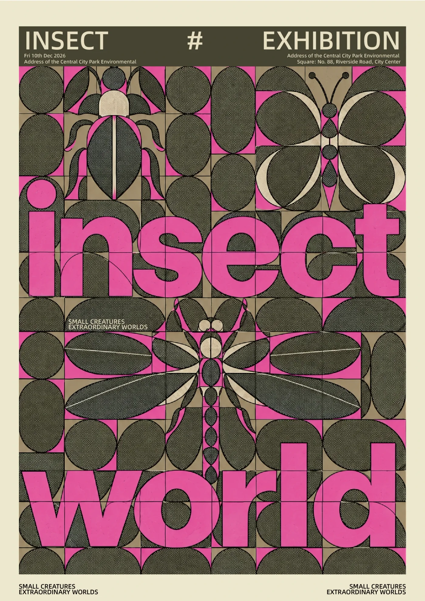
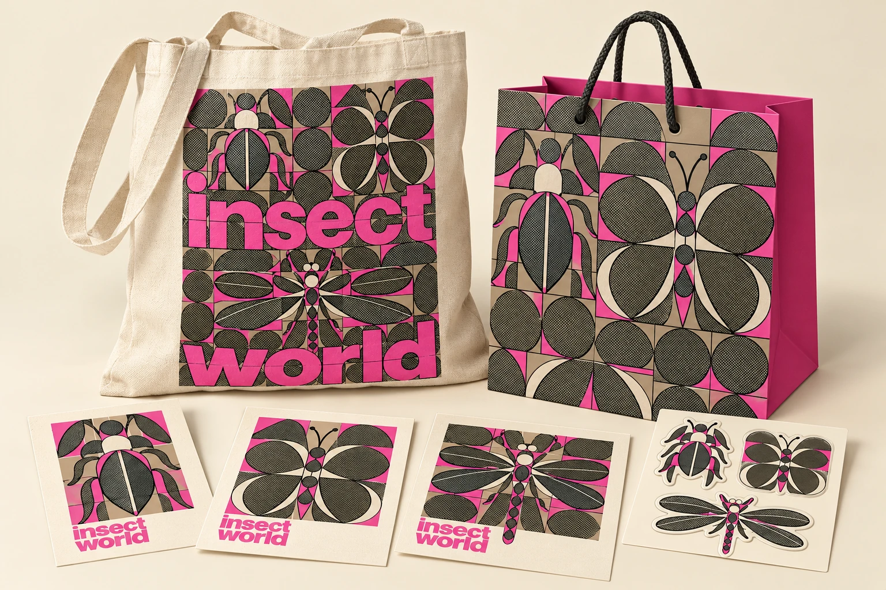
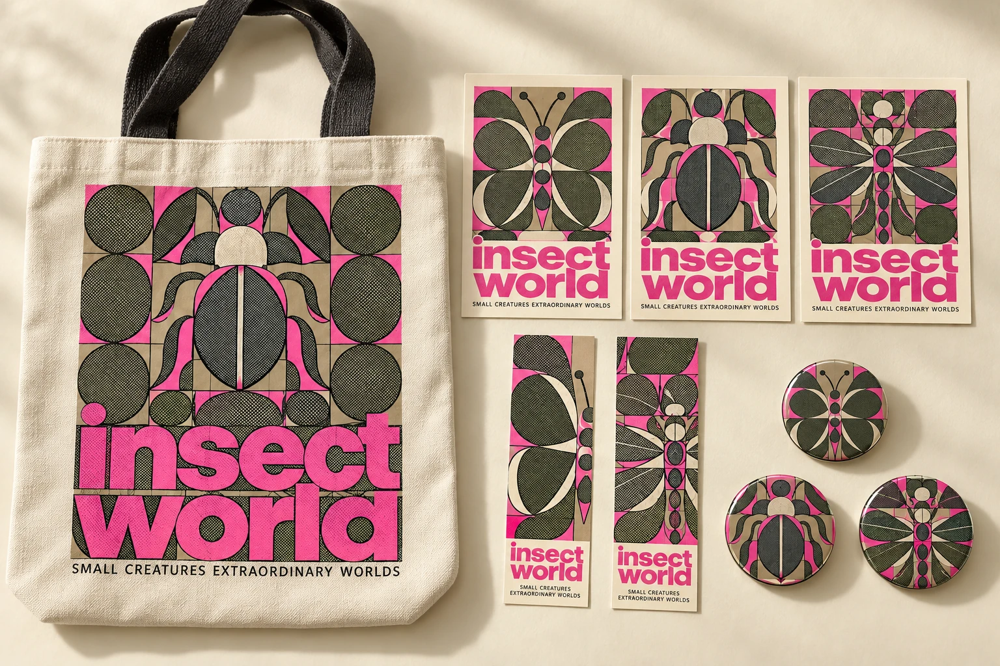

PROJECT DETAIL / 10
昆虫
世界展
INSECT WORLD · GRAPHIC DESIGN
主题 / THEME
昆虫主题展览海报与周边延展
作者 / AUTHOR
钟锡汉 ZHONGXIHAN
项目说明 / DESCRIPTION
以几何网格重构甲虫、蝴蝶与蜻蜓，将玫红、炭黑、米色及半调网点统一应用于海报和周边。

昆虫主题展览海报与周边延展
钟锡汉 ZHONGXIHAN
以几何网格重构甲虫、蝴蝶与蜻蜓，将玫红、炭黑、米色及半调网点统一应用于海报和周边。
围绕“微小生物，丰富世界”的展览主题，以昆虫的形态差异建立系列视觉，让甲虫、蝴蝶与蜻蜓成为具有识别度的图形。
以现有海报为基础，提取昆虫图案、几何网格和大尺度文字，将其延展至帆布袋、纸质手提袋、明信片与贴纸。周边采用 AI 辅助概念效果图呈现设计方向，原海报保持不变。
用圆形、椭圆与花瓣状模块组织昆虫的身体和翅膀，强调对称与重复。玫红文字和色块在炭黑、米色中形成视觉重点，细密网点和纸张肌理延续复古印刷质感。
帆布袋将昆虫图案与标题组成中央印花，纸质手提袋采用连续网格图案与玫红侧面。三款明信片分别展示甲虫、蝴蝶与蜻蜓，贴纸提取单个昆虫造型，适配不同载体。
实际制作中的问题与迭代记录待补充。周边目前为概念展示，尚未进行生产打样。
帆布袋、纸质手提袋、三款明信片与昆虫贴纸。

帆布袋、三款昆虫明信片、两款书签与三款圆形徽章。
